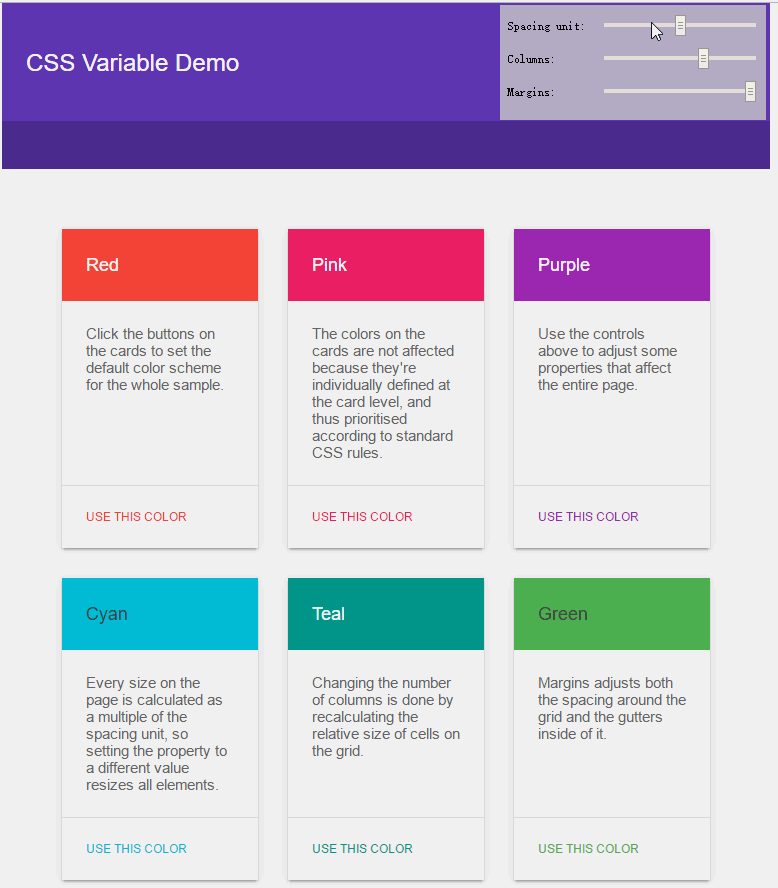

On Style Maintenance
在写代码时应当更多的想到之后的变更是否方便，而不仅仅是将代码写好；同时谈到了函数式编程和面向对象编程这两个不同的发展方向：函数式编程的优点在于我们可以预知输出为何物，而面向对象编程有利于之后的维护。
维护一份糟糕的代码就相当于Whac-A-Mole(类似与打地鼠的一个游戏)一样，永远无法预知下一步
The worst code is code that behaves a way that you can’t predict, quietly, all over the place.
We don’t need rockstars or JavaScript ninjas to help us keep large applications consistent and beautiful, instead we need janitors, diligent folks that will clean up a codebase as time passes without any hubris or chutzpah.
OOP编程的尴尬之处(来源自本文)
延伸阅读:
A practical introduction to functional programming
Functional-Light-JS
Carousels Don’t Have to be Complicated
主要讲了制作轮播图的几个简单方法:
比较感兴趣的是其中的Parallax effects on scroll event
待补充
Responsive Images in CSS
关于响应式图片CSS3的srset,sizes两个属性和HTML5的<picture>标签
待补充
The Challenge of Constructive Criticism and How to Get it
如何获得建设性的批评意见?文章从应该去询问谁,应当如何询问以及如何设置恰当的期望值(为自己或别人)三个方面谈起,可以说我们前端工程师同样需要掌握谈话的艺术
What is the difference between CSS variables and preprocessor variables?
讲解CSS原生变量和如Scss，Less之类CSS预处理器变量之间的区别。
|
|
使用native CSS variables有什么好处?
1.无需预处理器;
2.它们遵循层叠原则，即可以通过嵌套来覆盖当前值;
3.当变量值发生改变时(媒体查询或其他情况)，浏览器会根据情况重新渲染;
4.可以在JavaScript中访问并操作其值
CSS Variables: Why Should You Care?
The variables that [preprocessors] use suffer from a major drawback, which is that they’re static and can’t be changed at runtime. Adding the ability to change variables at runtime not only opens the door to things like dynamic application theming, but also has major ramifications for responsive design and the potential to polyfill future CSS features.
CSS Custom Properties (CSS Variables) Sample

并没有直接改变元素的属性值，而是改变变量值
使用preprocessor variables有什么好处?
1.最重要的一点就是无需考虑浏览器支持情况，因为它们会被编译为普通CSS
2.无足轻重的一点：变量可以不带单位
居然可以两者结合使用?
看这个Demo
延伸阅读:
Lea Verou’s CSS Variables: var(–subtitle):
David Khourshid’s Reactive Animations with CSS:
Harry Roberts Pragmatic, Practical, and Progressive Theming with Custom Properties
Roman Komarov’s Conditions for CSS Variables
Spoooooky CSS Selectors
很多奇奇怪怪的选择符，提到了CSS4中选择符可以开启大小写敏感
Spooky Dark UX Patterns
较为糟糕的用户体验:
1.弹出层。非常不利于屏幕阅读器的读取。
Adding Interaction on the Web
2.取消订阅按钮。很难找到，应当明确其位置
有人甚至在搜集一些取消订阅按钮的糟糕设计戳这里
3.复制粘贴陷阱
某些网站设计令人发指，当你想复制一段话时，鼠标刚点上去，就带你去了另外一个网页;或者复制好之后粘贴时会带有某些你并不想要的信息
Decoupling Your HTML,CSS and JavaScript
解耦HTML，CSS及JS代码，听上去不可思议，三者难道不应该紧密合作，缺一不可吗?且看作者Phlip Walton为我们答疑解惑:
Since some coupling in your front-end code is inevitable. Your goal shouldn’t be to simply eliminate coupling altogether. It should be to minimize the coupling that makes certain code parts unnecessarily dependent on others.
紧密耦合的几个常见场景:
1.过于复杂的选择器
在CSS禅意花园中有很多这样的代码，本意是为了将样式和标签分离，然而这样做仅仅是将HTML从CSS解耦，CSS却完全耦合于HTML(HTML结构)。
为什么不建议这么做?
因为在多人协作项目中，很容易出现他人在某个标签前或后添加新标签的行为，此时依据HTML结构生效的CSS就不起作用了。
最佳实践:尽量为每个标签添加有意义的class
2.类名承担了过多的功能
什么意思呢?就是说有时候我们为了省事，会将某个标签的类名既运用于CSS，又运用于JS，如下:
既要根据add-item设置相应的样式，还要利用它作为hook来写JS函数，你可能觉得这没有什么大不了的，那么让我们来设想一个场景:
页面中有很多类似的按钮，所以大量的按钮将会应用.add-item样式以及某个JS事件，然而项目变更，需要其中一个按钮突出显示，此时该如何是好?
|
|
以上类名将CSS和JS代码完全解耦
或许加一个class也可以?
3.JS代码依赖CSS太多了
我们常常用JS来切换元素的类名以改变元素的状态，这样会使得JS代码不够严谨。
最佳实践:比方说某个元素切换其可见性,我们可以为其添加is-visible类名,这样的话将元素和状态名一起绑定，可以区分默认样式.pop-up和状态样式.pop-up.is-visible
延伸阅读:
3.JS选择器
过重依赖JS中的选择器
改为:
综上，关键还是类名的取法要讲究
Fukol,a grid framework
Fukol™ is a lightweight, breakpoint free, completely responsive, element query driven*, progressive enhancement based CSS grid framework. It exists in this README.md file, in the section titled The CSS (below). It is 93 bytes minified, fitting comfortably inside a tweet:
Enhancing Our Components with CSS :empty
利用:empty这个CSS选择器我们可以做很多事情，使我们的页面更加灵活
比方说:
|
|
8 simple rules for a robust, scalable CSS architecture
作者根据其多年积累的经验为我们讲述该如何在大型项目中组织你的CSS代码，值得一读！
The Website Obesity Crisis
待看